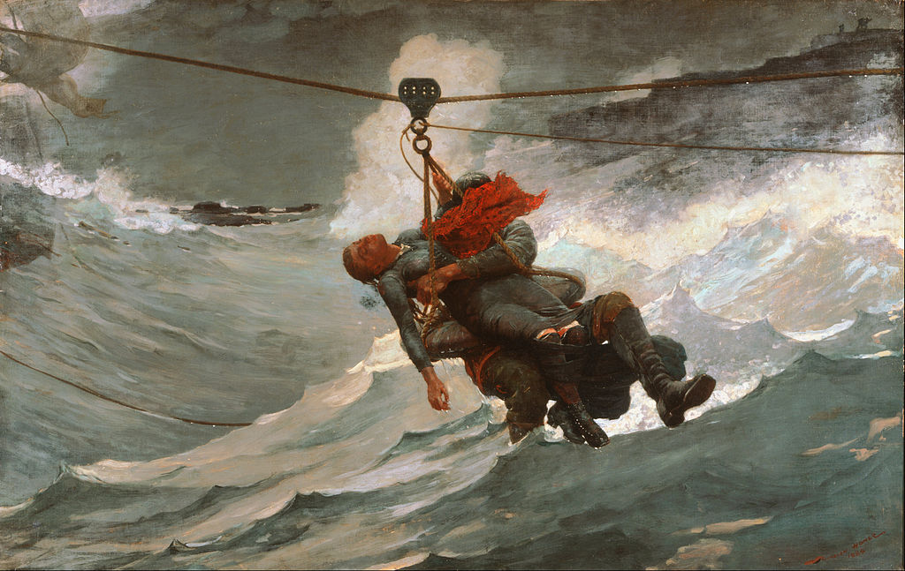

<head>
<meta charset="UTF-8" />
<meta name="keywords" content="drawing, painting" />
<meta name="description" content="drawings by Sunjy" />
<title>Sunjy</title>
<link rel="shortcut icon" type="image/x-icon" href="../../mImages/mCommon/favicon.ico" media="screen" />
<link rel="stylesheet" type="text/css" href="../../mCsses/mCommon/mCssA.css" />
<link rel="stylesheet" type="text/css" href="../../mCsses/mCommon/mCssB.css" />
<link rel="stylesheet" type="text/css" href="../../mCsses/mCommon/mCssC.css" />
<link rel="stylesheet" type="text/css" href="../../mCsses/mCommon/mCssD.css" />
<link rel="stylesheet" type="text/css" href="../../mCsses/mContent/mCssA.css" />
<link rel="stylesheet" type="text/css" href="../../mCsses/mContent/mCssB.css" />
<link rel="stylesheet" type="text/css" href="../../mCsses/mContent/mCssC.css" />
<link rel="stylesheet" type="text/css" href="../../mCsses/mContent/mCssD.css" />
</head>
<script type="text/javascript" src="../../mScripts/mContent/mContentAA.js" /></script>
<script type="text/javascript" src="../../mScripts/mContent/mContentAB.js" /></script>
<script type="text/javascript" src="../../mScripts/mContent/mContentAC.js" /></script>
<script type="text/javascript" src="../../mScripts/mContent/mContentAD.js" /></script>
<script type="text/javascript"></script> 
<script type="text/javascript">
document.write('<div class="mImgAbsolute"></div>');
/*
document.write('<p class="mFontSizeBColor" />From a white paper...</p>');
document.write('<table class="center"><tr><td>');
document.write('');
document.write('</td></tr></table>');
*/
</script>


<script type="text/javascript">
document.write('<p class="mFontSizeBColor" />The Life Line</p>');
document.write('<p class="mFontSizeSColor" />“The Life Line” by Winslow Homer depicts the dramatic rescue from a foundering ship made possible by a recent innovation, the breeches buoy. Secured to the ship and the shore, the device permitted the transfer of stranded passengers to safety utilizing a pulley.<br><br>The painting’s frame is cropped down to its essentials, and the composition focuses on the lifesaving action with massive waves that drench the semiconscious woman and her anonymous heroic savior. Not shown in the composition are the two crew teams on either end, which hauled back and forth the pulley system. The return rope is shown slack in the ocean.<br></p>');
document.write('<table class="center" /><tr><td>');
document.write('<br>The painting’s frame is cropped down to its essentials, and the composition focuses on the lifesaving action with massive waves that drench the semiconscious woman and her anonymous heroic savior. Not shown in the composition are the two crew teams on either end, which hauled back and forth the pulley system. The return rope is shown slack in the ocean.<br>" />');
document.write('</td></tr></table>');
</script>


